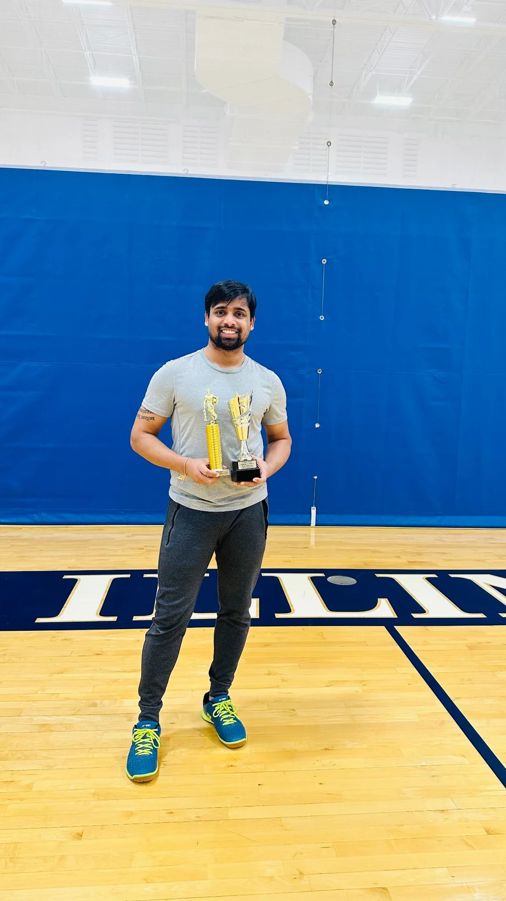
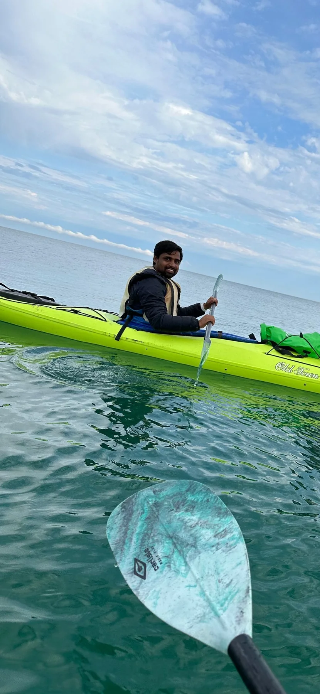
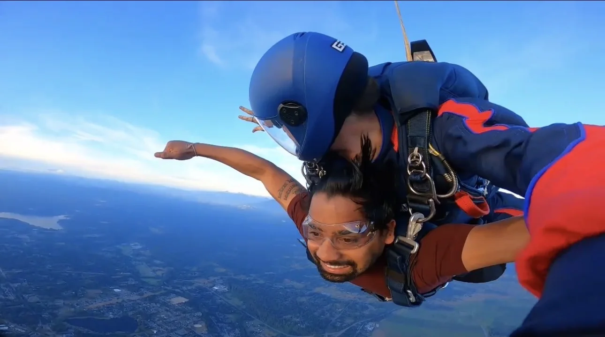

Cloud Operations Engineer
Building reliable systems
where cloud meets scale.
I design, automate, troubleshoot, and operate production infrastructure across AWS, Azure, and GCP, with a focus on Kubernetes, observability, distributed systems, and practical AI for operations.
Cloud infrastructure
AWS · Azure · GCP
Selected work
Production problems.
Measurable outcomes.
Case studies from reliability engineering, platform modernization, distributed systems, and an on-device computer vision project born from cricket.
01
Observability · SRE
Centralized observability platform
Built the team's first centralized open-source observability platform across three monitoring clusters, collecting six telemetry types from spoke environments and introducing SLI/SLO-driven reliability management.
Grafana AlloyMimirLokiTempoPyroscopePrometheus
Outcome20% ↓ MTTDProactive monitoring and error-budget governance
02
Kubernetes · Databases · FinOps
MongoDB modernization
Owned the Kubernetes side of a migration from standalone database hosts and Enterprise MongoDB to a simplified Kubernetes-managed Percona Server for MongoDB architecture.
Standalone MongoDB→Kubernetes→Percona
~$2Mannual savings contribution
03
AWS · Event-driven systems
AWS Migration Hub workflows
Built backend services and event-driven workflows for customer migration tracking, including GDPR-compliant account deletion and dead-letter queue handling.
API→Lambda / ECS→DynamoDB
SNS→SQS→Step Functions
15%request latency reduction via X-Ray tracing
04
Cassandra · Performance
Distributed database troubleshooting
Investigated compaction behavior, JVM heap dumps, and replication topology for enterprise Cassandra deployments, then guided architecture changes to remove performance bottlenecks.
CassandraDataStax EnterpriseJVMKubernetes
60%lower reported latency in a customer escalation

05
Computer Vision · On-device AI
Cricket DRS
An on-device video review app for run-outs and stumpings. The pipeline combines rolling video capture, crease detection, a surface-adaptive classical vision path, and a YOLOv11-nano model prepared for Core ML inference.
PythonYOLOCore MLiOSComputer Vision
Built a training dataset of ~2,000 images from five public sources and redesigned the detector after real-ground testing showed that one global extraction threshold would not generalize.
Experience
From production incidents
to platform architecture.
My work sits at the intersection of infrastructure, software engineering, and reliability, from customer-facing escalations to multi-cloud platform operations.
2024 → Present
Cloud Operations Engineer
Cumulocity GmbH · IoT Platform
Operating multi-cloud Kubernetes environments, building observability and AI-assisted incident-response tooling, running GitOps delivery, and modernizing the database tier.
EKSAKSGKETerraformFluxCDGrafana
2023 → 2024
Software Development Engineer
Amazon Web Services
Built backend services and event-driven workflows for AWS Migration Hub using serverless and containerized AWS services, distributed tracing, and progressive delivery.
LambdaECS FargateDynamoDBSNS/SQSStep Functions
2022 → 2023
Technical Support Engineer · Enterprise Escalations
DataStax
Owned high-severity Cassandra and DataStax Enterprise escalations across Kubernetes and standalone deployments, from diagnosis through remediation and postmortems.
CassandraJVMPagerDutyRCA
2015 → 2020
DevOps Engineer
InterGlobe Aviation Ltd.
Automated hybrid-cloud provisioning and application delivery, built CI/CD pipelines, and created monitoring and operations automation with Python and Bash.
TerraformAnsibleJenkinsAWSKubernetes
Engineering toolbox
Tools are useful.
Judgment matters more.
I use the stack that fits the failure mode, scale, and operational constraints, rather than treating technology names as a sticker collection.
Cloud
AWS · Azure · GCP
EKS, EC2, Lambda, DynamoDB, AKS, GKE, Cloud Run, networking, IAM, KMSKubernetes & Delivery
Kubernetes · Docker · Helm
Kustomize, FluxCD, GitHub Actions, Jenkins, SOPS, progressive deliveryInfrastructure as Code
Terraform · CloudFormation
Ansible, Atlantis, reusable infrastructure patternsObservability
Grafana ecosystem · Prometheus
Alloy, Mimir, Loki, Tempo, Pyroscope, Alertmanager, SLOs, incident responseSoftware & Data
Python · Bash · Java
MongoDB, Cassandra, DynamoDB, Kafka, Pulsar, REST APIs, event-driven systemsCustomer & Reliability
Architecture · Escalations · RCA
Technical demos, proofs of concept, cost reviews, postmortems, on-call operationsCertifications
Validated depth across cloud, Kubernetes, and ML.
GCPProfessional Machine Learning Engineer
CNCFCertified Kubernetes Security Specialist
CNCFCertified Kubernetes Administrator
AWSSolutions Architect · Associate
AWSDeveloper · Associate
AWSSysOps Administrator · Associate
About
I like systems that explain themselves.
I’m Ravi, a cloud operations engineer with a software-engineering background. I enjoy work where reliability is observable, automation removes toil, and architecture decisions can be connected to concrete operational outcomes.
My recent focus includes multi-cloud Kubernetes, GitOps, SLO-driven observability, database modernization, distributed-system troubleshooting, and an AI incident-response assistant that connects alerts, monitoring data, runbooks, and troubleshooting suggestions.
EducationM.S. Computer ScienceUniversity of Illinois Springfield
EducationB.S. Computer ScienceMewar University
Beyond engineering
Still chasing
interesting edges.
Cricket gave me a computer-vision project. Kayaking and skydiving mostly give me better stories. Either way, curiosity tends to leak out of the terminal.

